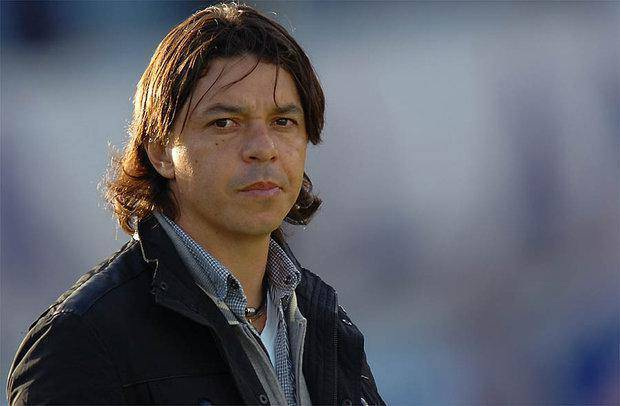

Biografía
Daniel Gallardo Merlo, Buenos Aires; 18 de enero de 1976. Es un exfutbolista y entrenador argentino. Es conocido como "El Muñeco".
Marcelo Gallardo nace en el humilde barrio del Parque San Martín, Merlo, el 18 de enero de 1976. Se inició en el fútbol infantil con el Estrella de Maldonado. Hizo todas las divisiones inferiores en River Plate e integró numerosos seleccionados juveniles. Su carrera fue marcada por su paso por River Plate, en donde es considerado un ídolo por su trayectoria, desde su debut a principios de los 90 hasta el 2010, su último año en el club.
En 2011 pasó al Nacional, club en donde se retiró y se coronó campeón uruguayo. Hasta julio del año siguiente fue técnico del bolso, equipo con el que además logró el bicampeonato uruguayo (campeón como jugador y como director técnico).